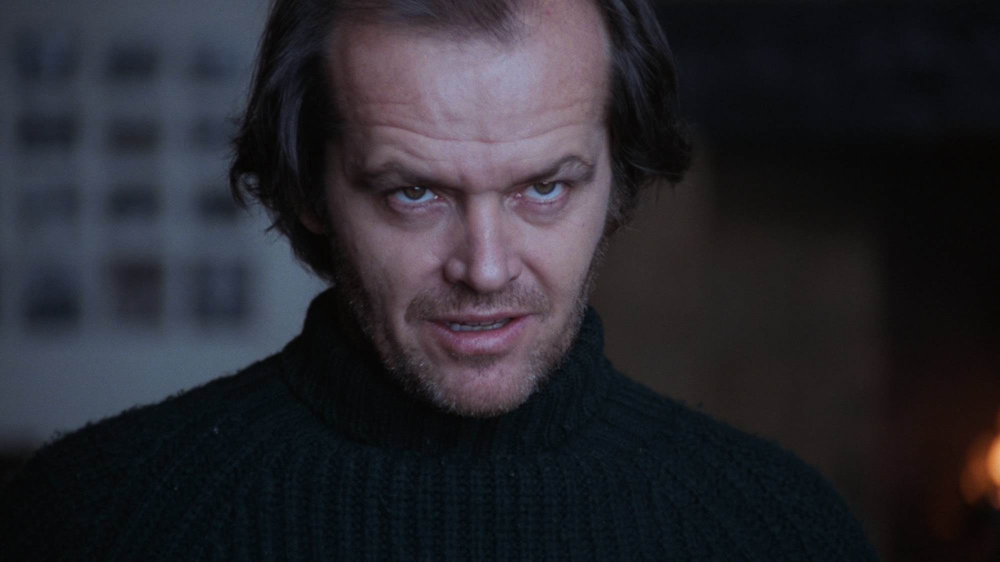
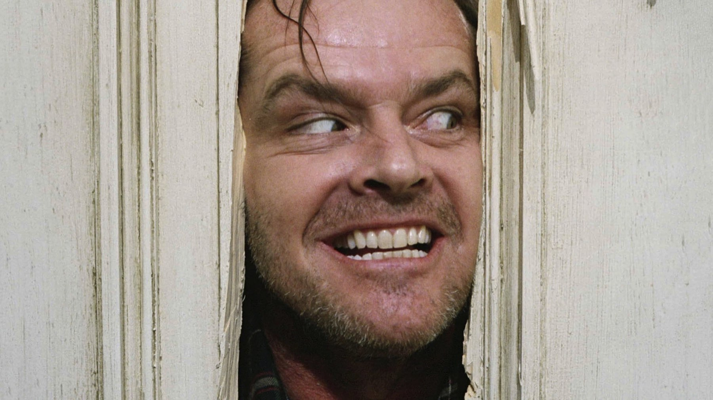
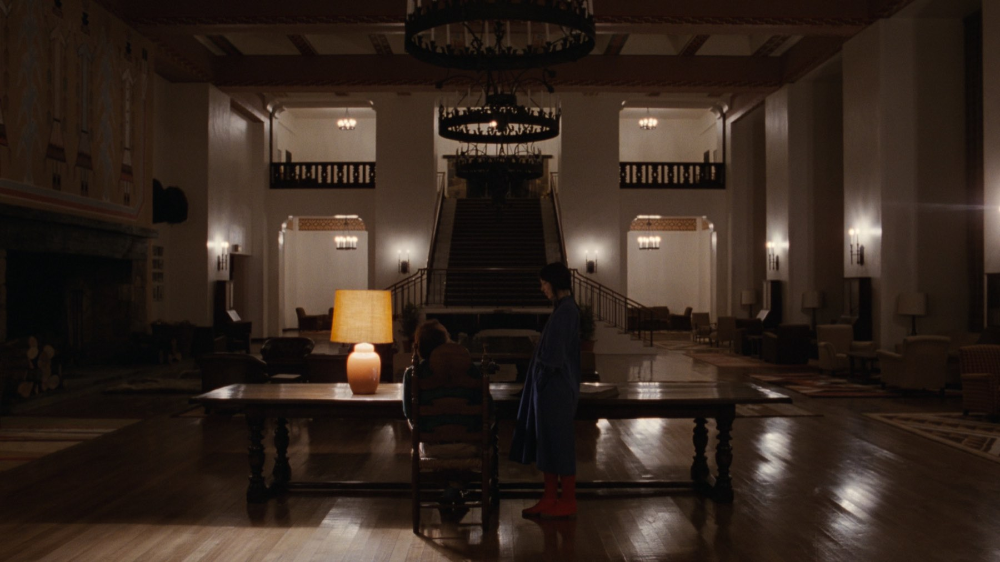

La porta di Shining ha un antenato nel cinema muto
Un'immagine nata dal cinema muto e un set durato un anno, mentre Stephen King non perdonò il film
Jack Torrance infila la testa nello squarcio di una porta e annuncia il suo arrivo. È l'immagine più riprodotta di Shining, ma sotto quella porta c'è più storia di quanto sembri: un antenato muto, un set durato un anno e uno scrittore che il film non lo digerì mai.
Una porta con un antenato muto
Nella scena Jack sfonda a colpi d'ascia la porta del bagno dove Wendy si è chiusa con Danny, e lei lo respinge con un coltello quando prova a entrare. Quello squarcio richiama due film muti, Broken Blossoms del 1919 e The Phantom Carriage del 1921. La battuta, invece, fu un'invenzione dell'attore. Kubrick lo incoraggiava a improvvisare quando riteneva che conoscesse bene le sue parti, e da lì nacque «Here's Johnny!». Per noi la scena funziona perché unisce un gesto da cinema muto a una frase da televisione, quindi parla a chi conosce la storia del cinema e a chi non l'ha mai studiata.

Un anno intero a Elstree
Le riprese durarono circa un anno, da maggio 1978 ad aprile 1979, soprattutto agli Elstree Studios. Per la parte di Danny, Kubrick fece provare circa cinquemila ragazzini in sei mesi prima di arrivare a Danny Lloyd. In diverse scene usò inoltre la Steadicam, allora un'invenzione nuovissima, ma non dimentichiamo che il risultato sullo schermo si deve soprattutto a quella pazienza quasi ostinata. Un anno per poco più di due ore di film. Dice quanto contasse trovare la scena giusta. Il film costò circa 19 milioni di dollari e uscì negli Stati Uniti il 23 maggio 1980. In Italia arrivò a dicembre dello stesso anno.

Shelley Duvall e le ripetizioni
Chi pagò di più quella pazienza fu Shelley Duvall. Raccontò di aver ripetuto 127 volte la scena in cui Wendy sale le scale con la mazza da baseball, anche se la veridicità di quella cifra è stata messa in dubbio. Disse inoltre che per gli ultimi nove mesi di riprese doveva piangere dodici ore al giorno, cinque o sei giorni a settimana, mentre la sceneggiatura cambiava così spesso che Nicholson smise di leggere ogni bozza. Nel 1981 Duvall ebbe una nomination ai Golden Raspberry come peggior attrice, ma nel 2022 fu annullata per il presunto trattamento riservatole da Kubrick. Il nostro parere è netto. La paura di Wendy è la cosa più vera del film, e sapendo quanto costò non sembra finzione fino in fondo.
Stephen King non perdonò il film
Il romanzo di Stephen King uscì nel 1977, quindi Kubrick lo portò sullo schermo a pochissima distanza. Lo scrittore criticò però il film per le deviazioni dal libro, e nel 1997 arrivò una miniserie in tre parti, più fedele al romanzo. Ecco perché esistono due Shining. Chi ha letto il libro vede nel film un tradimento, mentre chi arriva dallo schermo spesso trova il romanzo quasi troppo educato.
Tre durate, un solo incubo
Se guardandolo vi è sembrato un film diverso da quello che ricordavate, può dipendere dalla versione. Alla prima durava 146 minuti, la copia statunitense ne conta 144 e quella europea 119, cioè circa 27 minuti in meno. In Italia si vede su Sky Go e Now con l'abbonamento, oppure a noleggio su Apple TV, e conviene cercare la versione lunga. Per noi la differenza pesa. Ventisette minuti in meno bastano a cambiare il ritmo di un film che vive di attese e di corridoi vuoti, dove la paura nasce prima di ogni scena e non durante.
Rivedendo Shining guardate la porta: sotto la battuta c'è un secolo di cinema e un anno di fatica. Quale delle due versioni del film, quella di Kubrick o quella di King, vi fa più paura?
Domande frequenti
Quanto durarono le riprese di Shining?
Circa un anno, da maggio 1978 ad aprile 1979, soprattutto agli Elstree Studios.
«Here's Johnny» era nel copione?
No: nacque da un'improvvisazione di Jack Nicholson, che Kubrick incoraggiava.
Perché a Stephen King non piace il film?
Lo scrittore criticò le deviazioni dal romanzo; nel 1997 uscì una miniserie più fedele.
Dove si vede Shining in Italia?
Su Sky Go e Now con abbonamento, oppure a noleggio digitale.